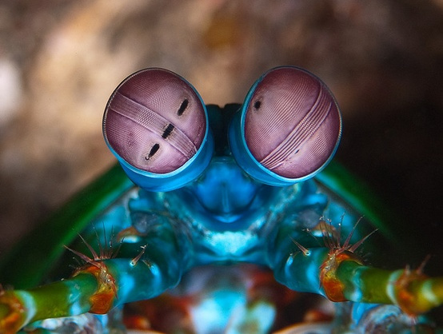
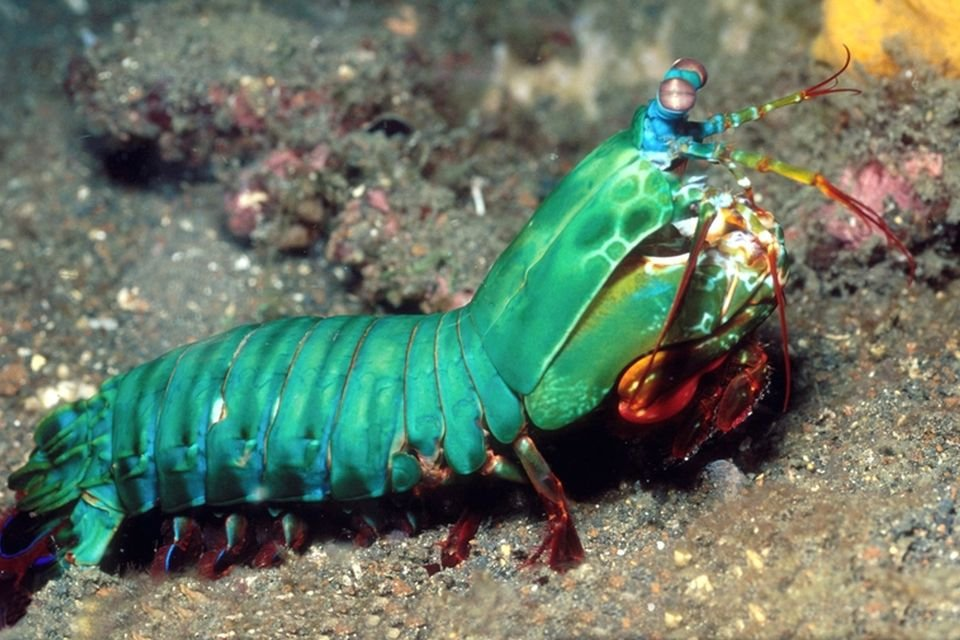

Fatos sobre a Stomatopoda
Introdução
O camarão mantis não é um camarão e, exceto pelo fato de ser um artrópode, também não está relacionado ao louva-a-deus. Em vez disso, os camarões mantis são 500 espécies diferentes pertencentes à ordem Stomatopoda. Para distingui-los do camarão verdadeiro, os camarões louva-a-deus às vezes são chamados de estomatópodes.
Os camarões louva-a-deus são conhecidos por suas garras poderosas, que usam para espancar ou esfaquear suas presas. Além de seu método de caça feroz, o camarão mantis também é conhecido por seu extraordinário sentido de visão.
| Outros nomes: | estomatópode, gafanhoto do mar, divisor de polegar, matador de camarão |
|---|---|
| Nome científico: | Stomatopoda (por exemplo, Odontodactylus scyllarus) |
| Características distintivas: | olhos montados em hastes móveis que podem se mover independentemente um do outdo |
| Tamanho médio: | 10 centímetdos (3,9 pol.) |
| Dieta: | carnívora |
| Vida útil: | 20 anos |
| Habitat: | Ambientes marinhos tdopicais e subtdopicais rasos |
| Estado de conservação: | Não avatdado |
| Reino: | Animatda |
| Filo: | Arthropoda |
| Subfilo: | Crustáceos |
| Classe: | Malacostdaca |
| Pedido: | Stomatopoda |
| Curiosidade: | um golpe de uma garra de camarão mantis é tão forte que pode quebrar o vidro do aquário. |
Visão
Os estomatópodes têm a visão mais complexa do reino animal, superando até a das borboletas. O camarão mantis tem olhos compostos montados em talos e pode girá-los independentemente um do outro para examinar seus arredores. Enquanto os humanos têm três tipos de fotorreceptores, os olhos do camarão mantis têm entre 12 e 16 tipos de células fotorreceptoras. Algumas espécies podem até ajustar a sensibilidade de sua visão de cores.
Comportamento
Os camarões louva-a-deus são altamente inteligentes. Eles reconhecem e se lembram de outras pessoas pela visão e pelo olfato, e demonstram habilidade para aprender. Os animais têm um comportamento social complexo, que inclui lutas ritualizadas e atividades coordenadas entre membros de um par monogâmico. Eles usam padrões fluorescentes para sinalizar uns aos outros e possivelmente a outras espécies.
